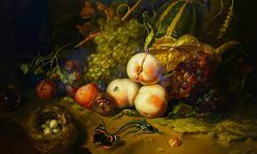

Fruit and insects. Rachel Ruysch. 1711 CE oil on wood.
- Form
- Asymmetrical, artful arrangement
- A finely detailed illustration of natural objects in a rural setting
- Content
- Not a depiction of actual flowers, but a construct of perfect specimens all in bloom at the same time
- The artist probably used illustrations in botany textbooks as a basis for the painting
- Wheat and grapes juxtaposed: may have been a reference to the Eucharist
- Context
- The artist’s father was a professor of anatomy and botany as well as an amateur painter
- The artist produced a number of such still lives in a woodland setting.
- Parallels Dutch interest in botany, and the growing of flowers for decorative and medicinal purposes
- Flowers were symbols of wealth and status.